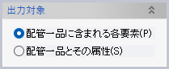
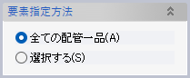
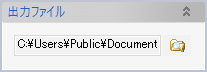
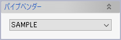
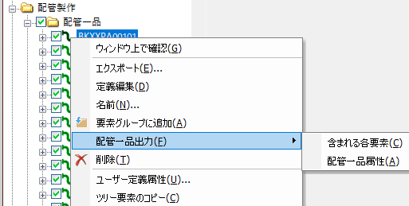

選択した配管一品要素や、そこに含まれる配管要素のサイズや重さといった各種属性をCSVファイルに出力します。
操作方法
出力対象とする要素属性のタイプを指定し、配管一品を選択します。出力ファイル名を指定し、OKをクリックします。
パラメータ
出力対象

出力対象を指定します。
要素指定方法

配管一品要素の指定方法を選択します。
出力ファイル

出力先CSVファイルの名前を指定します。
パイプベンダー

パイプベンダーの種類を登録ずみの設定一覧から選択します。
出力結果
CSVファイルには、各要素の以下の情報が出力されます。
- 出力対象＝配管一品に含まれる各要素の場合：
-
- 配管一品名（CSVファイルの列の名前は［SPOOL］、以下同じ）
- 要素名［NAME］
- 要素種別［TYPE］
- 標準部品名［STD PART］
- 副種別（ベンド：曲げの種類、スリーブ：中継/貫通/化粧）［SUBTYPE］
- 詳細種別（フランジ：ライニング、スリーブ：長スリーブ/特殊取付）［BIN PARAM］
- 種類（管材）［GRADE］
- 製管法［MANUFACTURING］
- 呼び径［NOMINAL］
- 呼び径（小径側）［REDUCED NOMINAL］
- 呼び厚さまたは呼び圧力［SCHEDULE/PRESSURE］
- 長さまたは溶接枝点突っ込み量（長スリーブ：「全長/始点側突込み量/終点側突込み量」形式）［LENGTH/INSERTION］
- 曲げ半径［RADIUS］
- 1個あたり重量［WEIGHT］
- 曲げまたはエルボ角度［BEND/ELBOW ANGLE］
- 1個あたり加工前長さ（現合管の伸ばしを含む。カッティングエルボならカットする前）［RAW LENGTH］
- 1個あたり加工前重量（同上）［RAW WEIGHT］
- 製作数［PRODUCTION COUNT］
- 合計長さ［TOTAL FINISHING WEIGHT］
- 合計重量［TOTAL FINISHING LENGTH］
- 合計加工前長さ［TOTAL RAW WEIGHT］
- 合計加工前重量［TOTAL RAW LENGTH］
- 出力対象＝配管一品とその属性の場合：
-
- 配管一品名［NAME］
- 配管系統名［SYSTEM］
- 通し番号［SPOOL INDEX］
- 種類（管材）［PIPE GRADE］
- 表面処理［TREATMENT］
- 水圧試験圧力［HYDROSTATIC TEST PRESSURE］
- 最大呼び径［MAX NOMINAL DIAMETER］
- 仕上げ区分（A＝完成管/B＝半完成管、継手の仮付あり/G＝現合管、伸ばしあり）［LEVEL OF COMPLETION］
- 犠牲管（犠牲管であれば「SP」と表示）［SACRIFICIAL］
- 製作数［PRODUCTION COUNT］
- 1個あたり加工前重量［UNIT MATERIAL WEIGHT］
- 合計加工前重量［TOTAL MATERIAL WEIGHT］
- フレーム範囲［FRAME RANGE］
長さの単位はmm、重さの単位はkgです。
コンテキストメニューから利用
モデル構成ウィンドウ内で配管一品を選択して右クリックすると表示されるコンテキストメニューからも「配管一品出力」機能を利用することができます。
